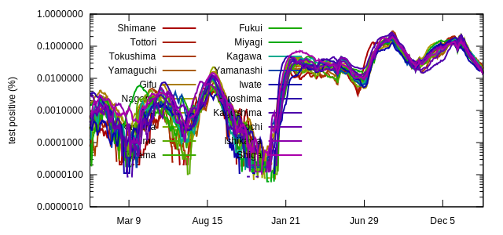
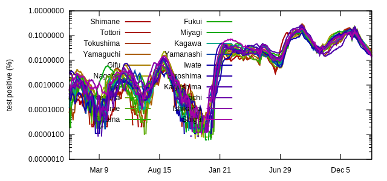
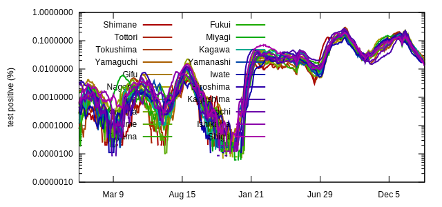

新型コロナ感染症動向
創価大学理工学部 畝見研究室 2023/02/25 16:05:02 更新
都道府県別 新規陽性患者数推移
参照データ:
https://covid19.mhlw.go.jp/public/opendata/newly_confirmed_cases_daily.csv
2023/02/25 15:56:28

9月20日までの東京都のデータに基づくグラフ
年齢層別新規陽性患者数、症状別患者数、検査結果の各推移をグラフにしたものです。


 
